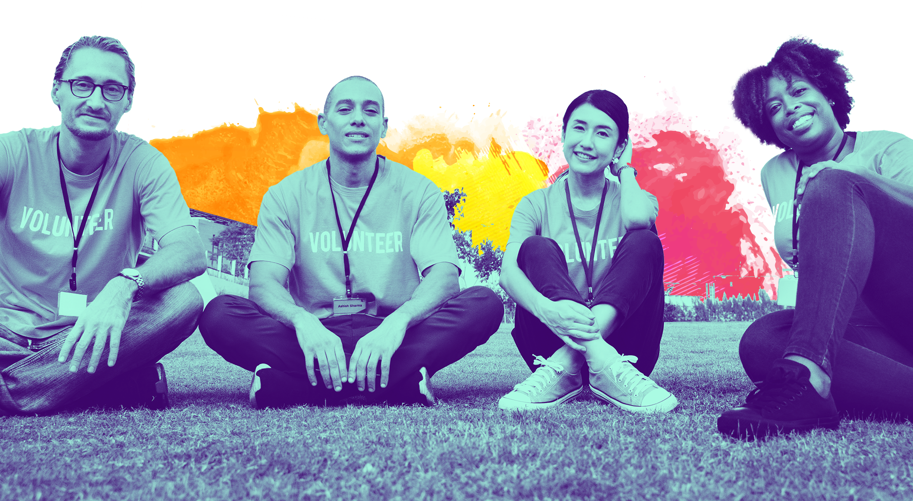

<main class="main">
    <section class="promo-primary">
        <picture>
            <source srcset="{{ site.blog_hero_image }}" media="(min-width: 992px)"/>
        </picture>
        <div class="promo-primary__description"> <span>Compassion</span></div>
        <div class="container">
            <div class="row">
                <div class="col-auto">
                    <div class="align-container">
                        <div class="align-container__item"><span class="promo-primary__pre-title">{{ site.blogsubtitle }}</span>
                            <h1 class="promo-primary__title"><span>Become</span> <span>a Volunteer</span></h1>
                        </div>
                    </div>
                </div>
            </div>
        </div>
    </section>
    <!-- section start-->
    <section class="section">
        <div class="container">
            <div class="row align-items-center">
                <div class="col-lg-6 col-xl-5">
                    <div class="img-box">
                        <div class="img-box__img"></div>
                    </div>
                </div>
                <div class="col-lg-6 col-xl-6 offset-xl-1">
                    <div class="heading heading--primary"><span class="heading__pre-title">{{ page.pretitle }}</span>
                        <h2 class="heading__title"><span>{{ page.title }}</span> <span>{{ page.title_2 }}</span></h2>
                    </div>
                {{ page.description }}
                </div>
            </div>
        </div>
    </section>
    <!-- section end-->
    <!-- section start-->
    <section class="section forms-section no-padding-top no-padding-bottom">
        <div class="container">
            <div class="row">
                <div class="col-12">
                    <script type="text/javascript" src="https://form.jotform.com/jsform/210806461333044"></script>
                </div>
            </div>
        </div>
    </section>
    <!-- section end-->
</main>